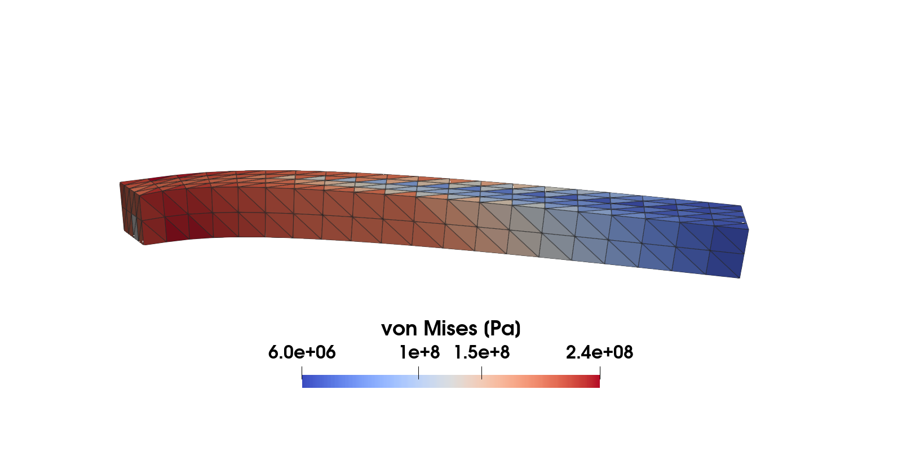
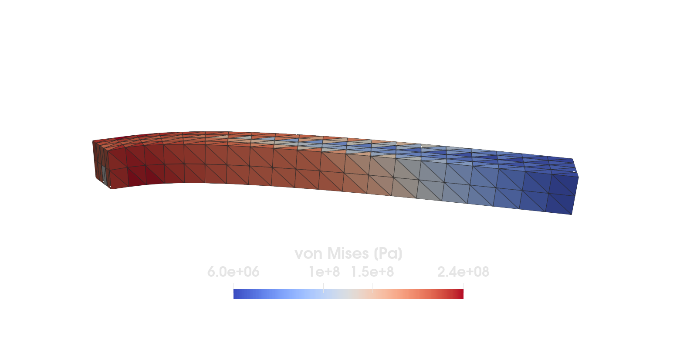
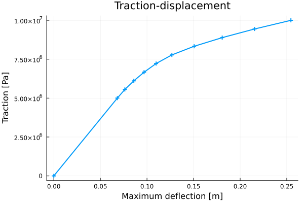

Von Mises plasticity


Figure 1. A coarse mesh solution of a cantilever beam subjected to a load causing plastic deformations. The initial yield limit is 200 MPa but due to hardening it increases up to approximately 240 MPa.
This example is also available as a Jupyter notebook: plasticity.ipynb.
Introduction
This example illustrates the use of a nonlinear material model in Ferrite. The particular model is von Mises plasticity (also know as J₂-plasticity) with isotropic hardening. The model is fully 3D, meaning that no assumptions like plane stress or plane strain are introduced.
Also note that the theory of the model is not described here, instead one is referred to standard textbooks on material modeling.
To illustrate the use of the plasticity model, we setup and solve a finite element problem consisting of a cantilever beam loaded at its free end. But first, we shortly describe the parts of the implementation dealing with the material modeling.
Material modeling
This section describes the structs and methods used to implement the material model
Material parameters and state variables
Start by loading some necessary packages
using Ferrite, Tensors, SparseArrays, LinearAlgebra, PrintfWe define a J₂-plasticity-material, containing material parameters and the elastic stiffness Dᵉ (since it is constant)
struct J2Plasticity{T, S <: SymmetricTensor{4, 3, T}} G::T # Shear modulus K::T # Bulk modulus σ₀::T # Initial yield limit H::T # Hardening modulus Dᵉ::S # Elastic stiffness tensorend;Next, we define a constructor for the material instance.
function J2Plasticity(E, ν, σ₀, H) δ(i, j) = i == j ? 1.0 : 0.0 # helper function G = E / 2(1 + ν) K = E / 3(1 - 2ν) Isymdev(i, j, k, l) = 0.5 * (δ(i, k) * δ(j, l) + δ(i, l) * δ(j, k)) - 1.0 / 3.0 * δ(i, j) * δ(k, l) temp(i, j, k, l) = 2.0G * (0.5 * (δ(i, k) * δ(j, l) + δ(i, l) * δ(j, k)) + ν / (1.0 - 2.0ν) * δ(i, j) * δ(k, l)) Dᵉ = SymmetricTensor{4, 3}(temp) return J2Plasticity(G, K, σ₀, H, Dᵉ)end;Above, we defined a constructor J2Plasticity(E, ν, σ₀, H) in terms of the more common material parameters $E$ and $ν$ - simply as a convenience for the user.
Define a struct to store the material state for a Gauss point.
struct MaterialState{T, S <: SecondOrderTensor{3, T}} # Store "converged" values ϵᵖ::S # plastic strain σ::S # stress k::T # hardening variableendConstructor for initializing a material state. Every quantity is set to zero.
function MaterialState() return MaterialState( zero(SymmetricTensor{2, 3}), zero(SymmetricTensor{2, 3}), 0.0 )endMain.MaterialStateFor later use, during the post-processing step, we define a function to compute the von Mises effective stress.
function vonMises(σ) s = dev(σ) return sqrt(3.0 / 2.0 * s ⊡ s)end;Constitutive driver
This is the actual method which computes the stress and material tangent stiffness in a given integration point. Input is the current strain and the material state from the previous timestep.
function compute_stress_tangent(ϵ::SymmetricTensor{2, 3}, material::J2Plasticity, state::MaterialState) # unpack some material parameters G = material.G H = material.H # We use (•)ᵗ to denote *trial*-values σᵗ = material.Dᵉ ⊡ (ϵ - state.ϵᵖ) # trial-stress sᵗ = dev(σᵗ) # deviatoric part of trial-stress J₂ = 0.5 * sᵗ ⊡ sᵗ # second invariant of sᵗ σᵗₑ = sqrt(3.0 * J₂) # effective trial-stress (von Mises stress) σʸ = material.σ₀ + H * state.k # Previous yield limit φᵗ = σᵗₑ - σʸ # Trial-value of the yield surface if φᵗ < 0.0 # elastic loading return σᵗ, material.Dᵉ, MaterialState(state.ϵᵖ, σᵗ, state.k) else # plastic loading h = H + 3G μ = φᵗ / h # plastic multiplier c1 = 1 - 3G * μ / σᵗₑ s = c1 * sᵗ # updated deviatoric stress σ = s + vol(σᵗ) # updated stress # Compute algorithmic tangent stiffness ``D = \frac{\Delta \sigma }{\Delta \epsilon}`` κ = H * (state.k + μ) # drag stress σₑ = material.σ₀ + κ # updated yield surface δ(i, j) = i == j ? 1.0 : 0.0 Isymdev(i, j, k, l) = 0.5 * (δ(i, k) * δ(j, l) + δ(i, l) * δ(j, k)) - 1.0 / 3.0 * δ(i, j) * δ(k, l) Q(i, j, k, l) = Isymdev(i, j, k, l) - 3.0 / (2.0 * σₑ^2) * s[i, j] * s[k, l] b = (3G * μ / σₑ) / (1.0 + 3G * μ / σₑ) Dtemp(i, j, k, l) = -2G * b * Q(i, j, k, l) - 9G^2 / (h * σₑ^2) * s[i, j] * s[k, l] D = material.Dᵉ + SymmetricTensor{4, 3}(Dtemp) # Return new state Δϵᵖ = 3 / 2 * μ / σₑ * s # plastic strain ϵᵖ = state.ϵᵖ + Δϵᵖ # plastic strain k = state.k + μ # hardening variable return σ, D, MaterialState(ϵᵖ, σ, k) endendcompute_stress_tangent (generic function with 1 method)Finite element problem
What follows are methods for assembling and solving the finite element problem.
function create_values(interpolation) # setup quadrature rules qr = QuadratureRule{RefTetrahedron}(2) facet_qr = FacetQuadratureRule{RefTetrahedron}(3) # cell and facetvalues for u cellvalues_u = CellValues(qr, interpolation) facetvalues_u = FacetValues(facet_qr, interpolation) return cellvalues_u, facetvalues_uend;Add degrees of freedom
function create_dofhandler(grid, interpolation) dh = DofHandler(grid) add!(dh, :u, interpolation) # add a displacement field with 3 components close!(dh) return dhendcreate_dofhandler (generic function with 1 method)Boundary conditions
function create_bc(dh, grid) dbcs = ConstraintHandler(dh) # Clamped on the left side dofs = [1, 2, 3] dbc = Dirichlet(:u, getfacetset(grid, "left"), (x, t) -> [0.0, 0.0, 0.0], dofs) add!(dbcs, dbc) close!(dbcs) return dbcsend;Assembling of element contributions
- Residual vector
r - Tangent stiffness
K
function doassemble!( K::SparseMatrixCSC, r::Vector, cellvalues::CellValues, dh::DofHandler, material::J2Plasticity, u, states, states_old ) assembler = start_assemble(K, r) nu = getnbasefunctions(cellvalues) re = zeros(nu) # element residual vector ke = zeros(nu, nu) # element tangent matrix for (i, cell) in enumerate(CellIterator(dh)) fill!(ke, 0) fill!(re, 0) eldofs = celldofs(cell) ue = u[eldofs] state = @view states[:, i] state_old = @view states_old[:, i] assemble_cell!(ke, re, cell, cellvalues, material, ue, state, state_old) assemble!(assembler, eldofs, ke, re) end return K, renddoassemble! (generic function with 1 method)Compute element contribution to the residual and the tangent.
function assemble_cell!(Ke, re, cell, cellvalues, material, ue, state, state_old) n_basefuncs = getnbasefunctions(cellvalues) reinit!(cellvalues, cell) for q_point in 1:getnquadpoints(cellvalues) # For each integration point, compute stress and material stiffness ϵ = function_symmetric_gradient(cellvalues, q_point, ue) # Total strain σ, D, state[q_point] = compute_stress_tangent(ϵ, material, state_old[q_point]) dΩ = getdetJdV(cellvalues, q_point) for i in 1:n_basefuncs δϵ = shape_symmetric_gradient(cellvalues, q_point, i) re[i] += (δϵ ⊡ σ) * dΩ # add internal force to residual for j in 1:i # loop only over lower half Δϵ = shape_symmetric_gradient(cellvalues, q_point, j) Ke[i, j] += δϵ ⊡ D ⊡ Δϵ * dΩ end end end symmetrize_lower!(Ke) returnendassemble_cell! (generic function with 1 method)Helper function to symmetrize the material tangent
function symmetrize_lower!(K) for i in 1:size(K, 1) for j in (i + 1):size(K, 1) K[i, j] = K[j, i] end end returnend;function doassemble_neumann!(r, dh, facetset, facetvalues, t) n_basefuncs = getnbasefunctions(facetvalues) re = zeros(n_basefuncs) # element residual vector for fc in FacetIterator(dh, facetset) # Add traction as a negative contribution to the element residual `re`: reinit!(facetvalues, fc) fill!(re, 0) for q_point in 1:getnquadpoints(facetvalues) dΓ = getdetJdV(facetvalues, q_point) for i in 1:n_basefuncs δu = shape_value(facetvalues, q_point, i) re[i] -= (δu ⋅ t) * dΓ end end assemble!(r, celldofs(fc), re) end return renddoassemble_neumann! (generic function with 1 method)Define a function which solves the finite element problem.
function solve() # Define material parameters E = 200.0e9 # [Pa] H = E / 20 # [Pa] ν = 0.3 # [-] σ₀ = 200.0e6 # [Pa] material = J2Plasticity(E, ν, σ₀, H) L = 10.0 # beam length [m] w = 1.0 # beam width [m] h = 1.0 # beam height[m] n_timesteps = 10 u_max = zeros(n_timesteps) traction_magnitude = 1.0e7 * range(0.5, 1.0, length = n_timesteps) # Create geometry, dofs and boundary conditions n = 2 nels = (10n, n, 2n) # number of elements in each spatial direction P1 = Vec((0.0, 0.0, 0.0)) # start point for geometry P2 = Vec((L, w, h)) # end point for geometry grid = generate_grid(Tetrahedron, nels, P1, P2) interpolation = Lagrange{RefTetrahedron, 1}()^3 dh = create_dofhandler(grid, interpolation) # helper function defined above dbcs = create_bc(dh, grid) # create Dirichlet boundary-conditions cellvalues, facetvalues = create_values(interpolation) # Pre-allocate solution vectors, etc. n_dofs = ndofs(dh) # total number of dofs u = zeros(n_dofs) # solution vector Δu = zeros(n_dofs) # displacement correction r = zeros(n_dofs) # residual K = allocate_matrix(dh) # tangent stiffness matrix # Create material states. One array for each cell, where each element is an array of material- # states - one for each integration point nqp = getnquadpoints(cellvalues) states = [MaterialState() for _ in 1:nqp, _ in 1:getncells(grid)] states_old = [MaterialState() for _ in 1:nqp, _ in 1:getncells(grid)] # Newton-Raphson loop NEWTON_TOL = 1 # 1 N print("\n Starting Newton iterations:\n") for timestep in 1:n_timesteps t = timestep # actual time (used for evaluating d-bndc) traction = Vec((0.0, 0.0, traction_magnitude[timestep])) newton_itr = -1 print("\n Time step @time = $timestep:\n") update!(dbcs, t) # evaluates the D-bndc at time t apply!(u, dbcs) # set the prescribed values in the solution vector while true newton_itr += 1 if newton_itr > 8 error("Reached maximum Newton iterations, aborting") break end # Tangent and residual contribution from the cells (volume integral) doassemble!(K, r, cellvalues, dh, material, u, states, states_old) # Residual contribution from the Neumann boundary (surface integral) doassemble_neumann!(r, dh, getfacetset(grid, "right"), facetvalues, traction) norm_r = norm(r[Ferrite.free_dofs(dbcs)]) print("Iteration: $newton_itr \tresidual: $(@sprintf("%.8f", norm_r))\n") if norm_r < NEWTON_TOL break end apply_zero!(K, r, dbcs) Δu = Symmetric(K) \ r u -= Δu end # Update the old states with the converged values for next timestep states_old .= states u_max[timestep] = maximum(abs, u) # maximum displacement in current timestep end # ## Postprocessing # Only a vtu-file corresponding to the last time-step is exported. # # The following is a quick (and dirty) way of extracting average cell data for export. mises_values = zeros(getncells(grid)) κ_values = zeros(getncells(grid)) for (el, cell_states) in enumerate(eachcol(states)) for state in cell_states mises_values[el] += vonMises(state.σ) κ_values[el] += state.k * material.H end mises_values[el] /= length(cell_states) # average von Mises stress κ_values[el] /= length(cell_states) # average drag stress end VTKGridFile("plasticity", dh) do vtk write_solution(vtk, dh, u) # displacement field write_cell_data(vtk, mises_values, "von Mises [Pa]") write_cell_data(vtk, κ_values, "Drag stress [Pa]") end return u_max, traction_magnitudeendsolve (generic function with 1 method)Solve the finite element problem and for each time-step extract maximum displacement and the corresponding traction load. Also compute the limit-traction-load
u_max, traction_magnitude = solve();
Starting Newton iterations:
Time step @time = 1:
Iteration: 0 residual: 1435838.41167605
Iteration: 1 residual: 118655.22436550
Iteration: 2 residual: 59.50456045
Iteration: 3 residual: 0.00002631
Time step @time = 2:
Iteration: 0 residual: 159537.60129703
Iteration: 1 residual: 1706974.26600298
Iteration: 2 residual: 97346.48157106
Iteration: 3 residual: 37.17532013
Iteration: 4 residual: 0.00001474
Time step @time = 3:
Iteration: 0 residual: 159537.60129793
Iteration: 1 residual: 3316719.78792628
Iteration: 2 residual: 192088.08685621
Iteration: 3 residual: 200.14337245
Iteration: 4 residual: 0.00027053
Time step @time = 4:
Iteration: 0 residual: 159537.60129722
Iteration: 1 residual: 3536807.22669495
Iteration: 2 residual: 88358.20040325
Iteration: 3 residual: 53.50749448
Iteration: 4 residual: 0.00004291
Time step @time = 5:
Iteration: 0 residual: 159537.60129720
Iteration: 1 residual: 4766259.36740375
Iteration: 2 residual: 820170.83254529
Iteration: 3 residual: 3091.99689623
Iteration: 4 residual: 0.06075437
Time step @time = 6:
Iteration: 0 residual: 159537.60129716
Iteration: 1 residual: 6066663.92047625
Iteration: 2 residual: 1517217.15901035
Iteration: 3 residual: 11867.98662989
Iteration: 4 residual: 0.82896405
Time step @time = 7:
Iteration: 0 residual: 159537.60129986
Iteration: 1 residual: 7674596.85671183
Iteration: 2 residual: 2176452.49215578
Iteration: 3 residual: 25189.78464953
Iteration: 4 residual: 3.75269435
Iteration: 5 residual: 0.00002743
Time step @time = 8:
Iteration: 0 residual: 159537.60129737
Iteration: 1 residual: 8723356.02872259
Iteration: 2 residual: 1905996.68607600
Iteration: 3 residual: 35145.25616100
Iteration: 4 residual: 3.53101315
Iteration: 5 residual: 0.00003025
Time step @time = 9:
Iteration: 0 residual: 159537.60129710
Iteration: 1 residual: 8880464.76527662
Iteration: 2 residual: 1966999.23398305
Iteration: 3 residual: 16033.67875785
Iteration: 4 residual: 1.85617681
Iteration: 5 residual: 0.00003259
Time step @time = 10:
Iteration: 0 residual: 159537.60129842
Iteration: 1 residual: 9650088.21094830
Iteration: 2 residual: 2019070.76672559
Iteration: 3 residual: 34944.16968955
Iteration: 4 residual: 4.42028762
Iteration: 5 residual: 0.00004368Finally we plot the load-displacement curve.
using Plotsplot( vcat(0.0, u_max), # add the origin as a point vcat(0.0, traction_magnitude), linewidth = 2, title = "Traction-displacement", label = nothing, markershape = :auto)ylabel!("Traction [Pa]")xlabel!("Maximum deflection [m]")
Figure 2. Load-displacement-curve for the beam, showing a clear decrease in stiffness as more material starts to yield.
Plain program
Here follows a version of the program without any comments. The file is also available here: plasticity.jl.
using Ferrite, Tensors, SparseArrays, LinearAlgebra, Printfstruct J2Plasticity{T, S <: SymmetricTensor{4, 3, T}} G::T # Shear modulus K::T # Bulk modulus σ₀::T # Initial yield limit H::T # Hardening modulus Dᵉ::S # Elastic stiffness tensorend;function J2Plasticity(E, ν, σ₀, H) δ(i, j) = i == j ? 1.0 : 0.0 # helper function G = E / 2(1 + ν) K = E / 3(1 - 2ν) Isymdev(i, j, k, l) = 0.5 * (δ(i, k) * δ(j, l) + δ(i, l) * δ(j, k)) - 1.0 / 3.0 * δ(i, j) * δ(k, l) temp(i, j, k, l) = 2.0G * (0.5 * (δ(i, k) * δ(j, l) + δ(i, l) * δ(j, k)) + ν / (1.0 - 2.0ν) * δ(i, j) * δ(k, l)) Dᵉ = SymmetricTensor{4, 3}(temp) return J2Plasticity(G, K, σ₀, H, Dᵉ)end;struct MaterialState{T, S <: SecondOrderTensor{3, T}} # Store "converged" values ϵᵖ::S # plastic strain σ::S # stress k::T # hardening variableendfunction MaterialState() return MaterialState( zero(SymmetricTensor{2, 3}), zero(SymmetricTensor{2, 3}), 0.0 )endfunction vonMises(σ) s = dev(σ) return sqrt(3.0 / 2.0 * s ⊡ s)end;function compute_stress_tangent(ϵ::SymmetricTensor{2, 3}, material::J2Plasticity, state::MaterialState) # unpack some material parameters G = material.G H = material.H # We use (•)ᵗ to denote *trial*-values σᵗ = material.Dᵉ ⊡ (ϵ - state.ϵᵖ) # trial-stress sᵗ = dev(σᵗ) # deviatoric part of trial-stress J₂ = 0.5 * sᵗ ⊡ sᵗ # second invariant of sᵗ σᵗₑ = sqrt(3.0 * J₂) # effective trial-stress (von Mises stress) σʸ = material.σ₀ + H * state.k # Previous yield limit φᵗ = σᵗₑ - σʸ # Trial-value of the yield surface if φᵗ < 0.0 # elastic loading return σᵗ, material.Dᵉ, MaterialState(state.ϵᵖ, σᵗ, state.k) else # plastic loading h = H + 3G μ = φᵗ / h # plastic multiplier c1 = 1 - 3G * μ / σᵗₑ s = c1 * sᵗ # updated deviatoric stress σ = s + vol(σᵗ) # updated stress # Compute algorithmic tangent stiffness ``D = \frac{\Delta \sigma }{\Delta \epsilon}`` κ = H * (state.k + μ) # drag stress σₑ = material.σ₀ + κ # updated yield surface δ(i, j) = i == j ? 1.0 : 0.0 Isymdev(i, j, k, l) = 0.5 * (δ(i, k) * δ(j, l) + δ(i, l) * δ(j, k)) - 1.0 / 3.0 * δ(i, j) * δ(k, l) Q(i, j, k, l) = Isymdev(i, j, k, l) - 3.0 / (2.0 * σₑ^2) * s[i, j] * s[k, l] b = (3G * μ / σₑ) / (1.0 + 3G * μ / σₑ) Dtemp(i, j, k, l) = -2G * b * Q(i, j, k, l) - 9G^2 / (h * σₑ^2) * s[i, j] * s[k, l] D = material.Dᵉ + SymmetricTensor{4, 3}(Dtemp) # Return new state Δϵᵖ = 3 / 2 * μ / σₑ * s # plastic strain ϵᵖ = state.ϵᵖ + Δϵᵖ # plastic strain k = state.k + μ # hardening variable return σ, D, MaterialState(ϵᵖ, σ, k) endendfunction create_values(interpolation) # setup quadrature rules qr = QuadratureRule{RefTetrahedron}(2) facet_qr = FacetQuadratureRule{RefTetrahedron}(3) # cell and facetvalues for u cellvalues_u = CellValues(qr, interpolation) facetvalues_u = FacetValues(facet_qr, interpolation) return cellvalues_u, facetvalues_uend;function create_dofhandler(grid, interpolation) dh = DofHandler(grid) add!(dh, :u, interpolation) # add a displacement field with 3 components close!(dh) return dhendfunction create_bc(dh, grid) dbcs = ConstraintHandler(dh) # Clamped on the left side dofs = [1, 2, 3] dbc = Dirichlet(:u, getfacetset(grid, "left"), (x, t) -> [0.0, 0.0, 0.0], dofs) add!(dbcs, dbc) close!(dbcs) return dbcsend;function doassemble!( K::SparseMatrixCSC, r::Vector, cellvalues::CellValues, dh::DofHandler, material::J2Plasticity, u, states, states_old ) assembler = start_assemble(K, r) nu = getnbasefunctions(cellvalues) re = zeros(nu) # element residual vector ke = zeros(nu, nu) # element tangent matrix for (i, cell) in enumerate(CellIterator(dh)) fill!(ke, 0) fill!(re, 0) eldofs = celldofs(cell) ue = u[eldofs] state = @view states[:, i] state_old = @view states_old[:, i] assemble_cell!(ke, re, cell, cellvalues, material, ue, state, state_old) assemble!(assembler, eldofs, ke, re) end return K, rendfunction assemble_cell!(Ke, re, cell, cellvalues, material, ue, state, state_old) n_basefuncs = getnbasefunctions(cellvalues) reinit!(cellvalues, cell) for q_point in 1:getnquadpoints(cellvalues) # For each integration point, compute stress and material stiffness ϵ = function_symmetric_gradient(cellvalues, q_point, ue) # Total strain σ, D, state[q_point] = compute_stress_tangent(ϵ, material, state_old[q_point]) dΩ = getdetJdV(cellvalues, q_point) for i in 1:n_basefuncs δϵ = shape_symmetric_gradient(cellvalues, q_point, i) re[i] += (δϵ ⊡ σ) * dΩ # add internal force to residual for j in 1:i # loop only over lower half Δϵ = shape_symmetric_gradient(cellvalues, q_point, j) Ke[i, j] += δϵ ⊡ D ⊡ Δϵ * dΩ end end end symmetrize_lower!(Ke) returnendfunction symmetrize_lower!(K) for i in 1:size(K, 1) for j in (i + 1):size(K, 1) K[i, j] = K[j, i] end end returnend;function doassemble_neumann!(r, dh, facetset, facetvalues, t) n_basefuncs = getnbasefunctions(facetvalues) re = zeros(n_basefuncs) # element residual vector for fc in FacetIterator(dh, facetset) # Add traction as a negative contribution to the element residual `re`: reinit!(facetvalues, fc) fill!(re, 0) for q_point in 1:getnquadpoints(facetvalues) dΓ = getdetJdV(facetvalues, q_point) for i in 1:n_basefuncs δu = shape_value(facetvalues, q_point, i) re[i] -= (δu ⋅ t) * dΓ end end assemble!(r, celldofs(fc), re) end return rendfunction solve() # Define material parameters E = 200.0e9 # [Pa] H = E / 20 # [Pa] ν = 0.3 # [-] σ₀ = 200.0e6 # [Pa] material = J2Plasticity(E, ν, σ₀, H) L = 10.0 # beam length [m] w = 1.0 # beam width [m] h = 1.0 # beam height[m] n_timesteps = 10 u_max = zeros(n_timesteps) traction_magnitude = 1.0e7 * range(0.5, 1.0, length = n_timesteps) # Create geometry, dofs and boundary conditions n = 2 nels = (10n, n, 2n) # number of elements in each spatial direction P1 = Vec((0.0, 0.0, 0.0)) # start point for geometry P2 = Vec((L, w, h)) # end point for geometry grid = generate_grid(Tetrahedron, nels, P1, P2) interpolation = Lagrange{RefTetrahedron, 1}()^3 dh = create_dofhandler(grid, interpolation) # helper function defined above dbcs = create_bc(dh, grid) # create Dirichlet boundary-conditions cellvalues, facetvalues = create_values(interpolation) # Pre-allocate solution vectors, etc. n_dofs = ndofs(dh) # total number of dofs u = zeros(n_dofs) # solution vector Δu = zeros(n_dofs) # displacement correction r = zeros(n_dofs) # residual K = allocate_matrix(dh) # tangent stiffness matrix # Create material states. One array for each cell, where each element is an array of material- # states - one for each integration point nqp = getnquadpoints(cellvalues) states = [MaterialState() for _ in 1:nqp, _ in 1:getncells(grid)] states_old = [MaterialState() for _ in 1:nqp, _ in 1:getncells(grid)] # Newton-Raphson loop NEWTON_TOL = 1 # 1 N print("\n Starting Newton iterations:\n") for timestep in 1:n_timesteps t = timestep # actual time (used for evaluating d-bndc) traction = Vec((0.0, 0.0, traction_magnitude[timestep])) newton_itr = -1 print("\n Time step @time = $timestep:\n") update!(dbcs, t) # evaluates the D-bndc at time t apply!(u, dbcs) # set the prescribed values in the solution vector while true newton_itr += 1 if newton_itr > 8 error("Reached maximum Newton iterations, aborting") break end # Tangent and residual contribution from the cells (volume integral) doassemble!(K, r, cellvalues, dh, material, u, states, states_old) # Residual contribution from the Neumann boundary (surface integral) doassemble_neumann!(r, dh, getfacetset(grid, "right"), facetvalues, traction) norm_r = norm(r[Ferrite.free_dofs(dbcs)]) print("Iteration: $newton_itr \tresidual: $(@sprintf("%.8f", norm_r))\n") if norm_r < NEWTON_TOL break end apply_zero!(K, r, dbcs) Δu = Symmetric(K) \ r u -= Δu end # Update the old states with the converged values for next timestep states_old .= states u_max[timestep] = maximum(abs, u) # maximum displacement in current timestep end # ## Postprocessing # Only a vtu-file corresponding to the last time-step is exported. # # The following is a quick (and dirty) way of extracting average cell data for export. mises_values = zeros(getncells(grid)) κ_values = zeros(getncells(grid)) for (el, cell_states) in enumerate(eachcol(states)) for state in cell_states mises_values[el] += vonMises(state.σ) κ_values[el] += state.k * material.H end mises_values[el] /= length(cell_states) # average von Mises stress κ_values[el] /= length(cell_states) # average drag stress end VTKGridFile("plasticity", dh) do vtk write_solution(vtk, dh, u) # displacement field write_cell_data(vtk, mises_values, "von Mises [Pa]") write_cell_data(vtk, κ_values, "Drag stress [Pa]") end return u_max, traction_magnitudeendu_max, traction_magnitude = solve();using Plotsplot( vcat(0.0, u_max), # add the origin as a point vcat(0.0, traction_magnitude), linewidth = 2, title = "Traction-displacement", label = nothing, markershape = :auto)ylabel!("Traction [Pa]")xlabel!("Maximum deflection [m]")This page was generated using Literate.jl.